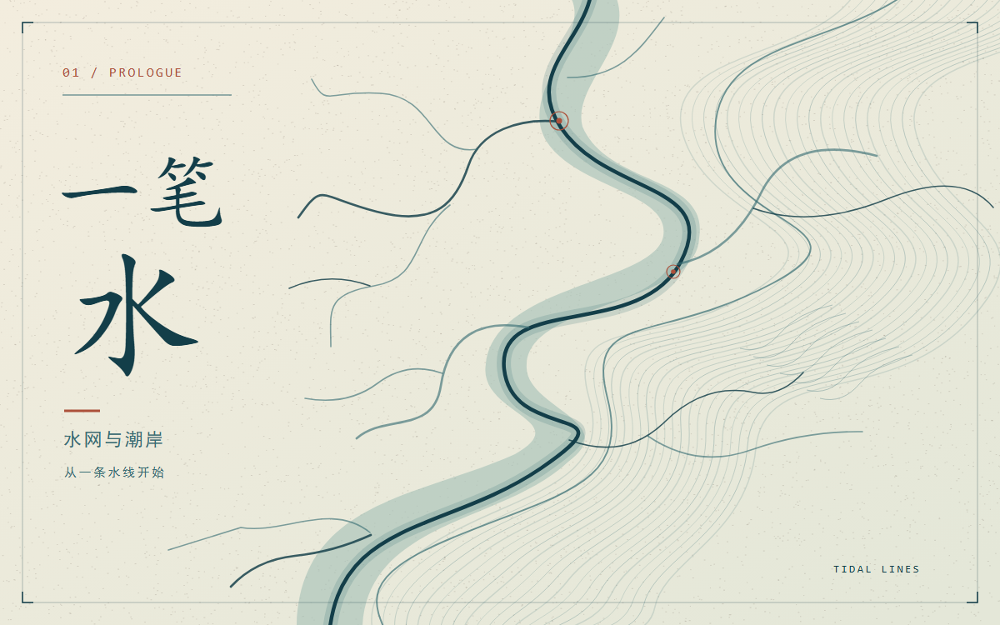
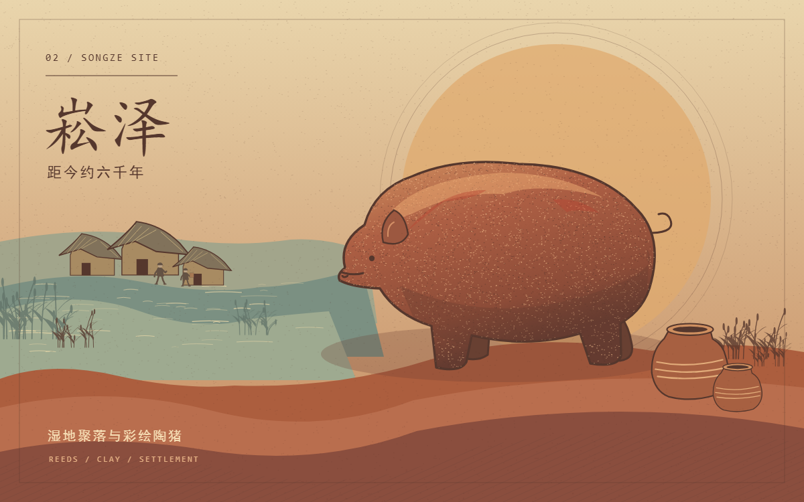
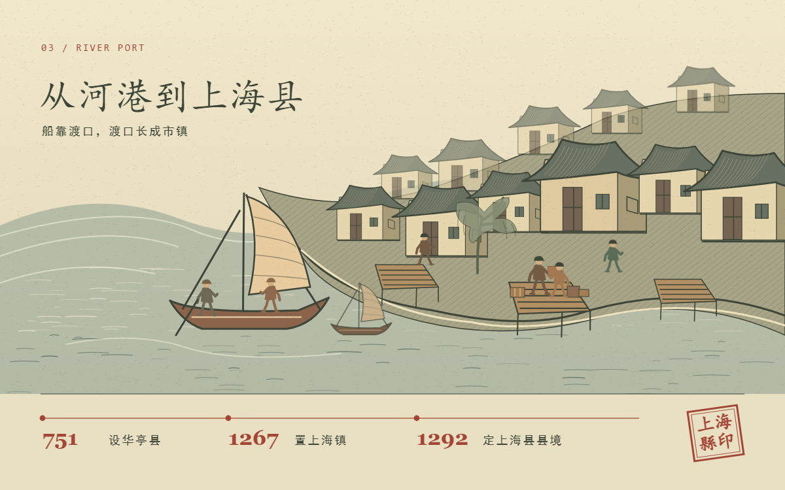
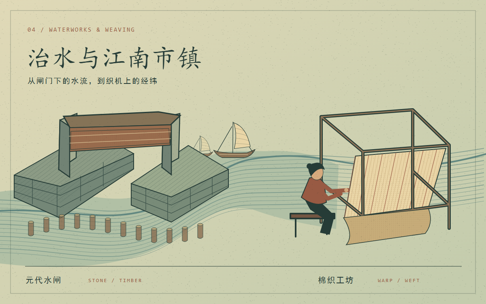
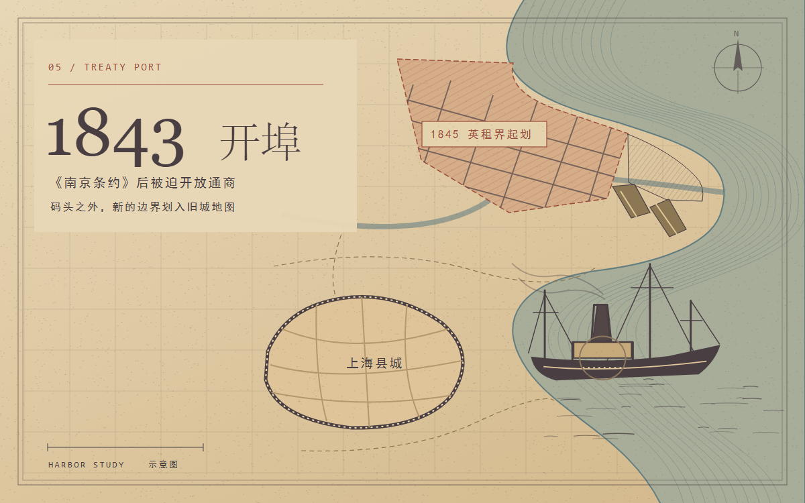
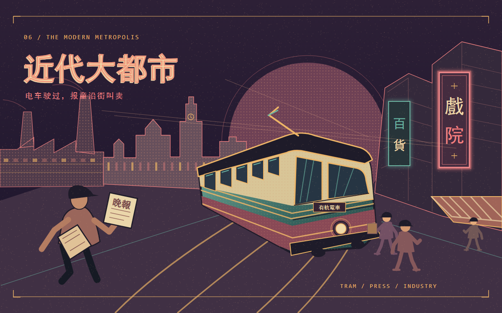
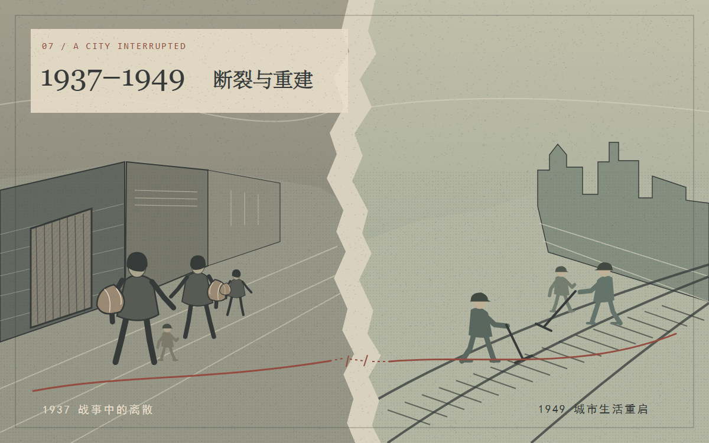
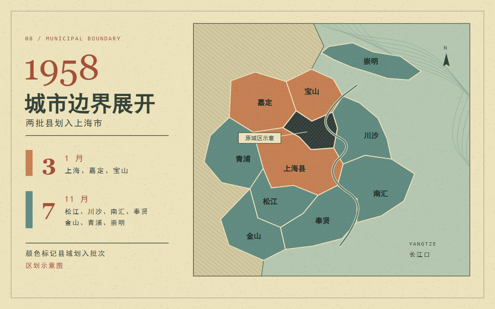
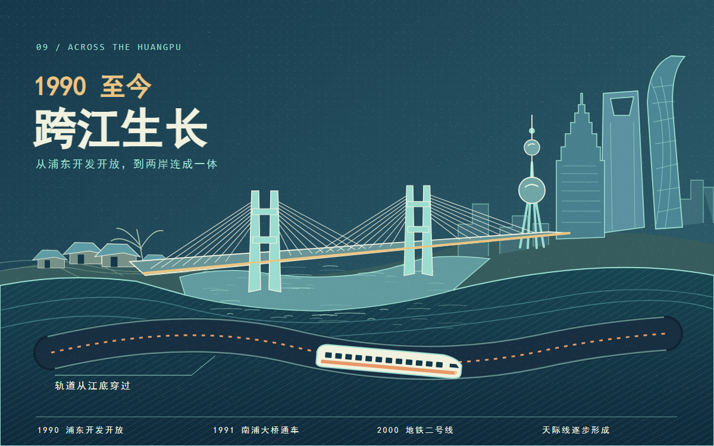
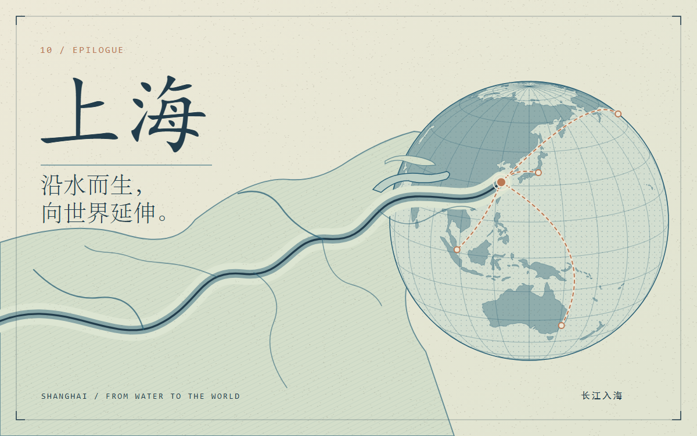

一笔水
水网与潮岸，从一条水线开始。画面是叙事示意。

崧泽
距今约六千年，先民已在上海地区依水而居。崧泽遗址出土的陶器与墓葬，是这段生活史的线索。

从河港到上海县
船靠渡口，渡口长成市镇。751年设华亭县，1267年置上海镇，1292年定上海县境。

治水与江南市镇
从闸门下的水流，到织机上的经纬。水闸调节河道，棉纺织让江南市镇更加繁忙。

1843 开埠
《南京条约》后被迫开放通商。码头之外，新的边界划入旧城地图；城市增长与殖民空间并存。

近代大都市
电车驶过，报童沿街叫卖。摩登的街景背后，是工厂、劳动与奔忙。

断裂与重建
1937年的战火令城市生活遭受重创；1949年，城市生活在人们手中重新接续。

城市边界展开
1958年，江苏十县分两批划入上海：1月三县，11月七县。扩大的是行政版图，不是一夜之间长满楼房的城市。

跨江生长
从浦东开发开放，到桥梁、轨道与天际线逐步连成一体。城市仍在沿水寻找下一条路。

从水到世界
上海，沿水而生，向世界延伸。这段长卷只选取了少数转折，地图仍会继续变化。